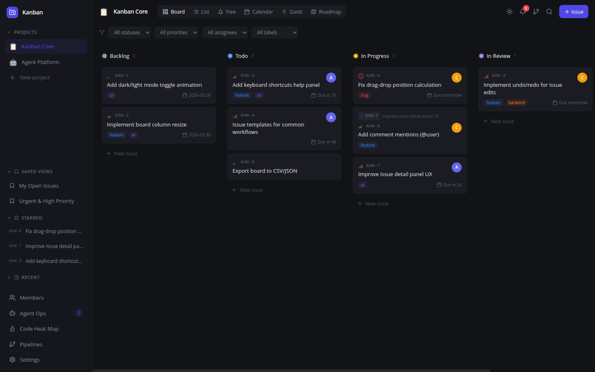
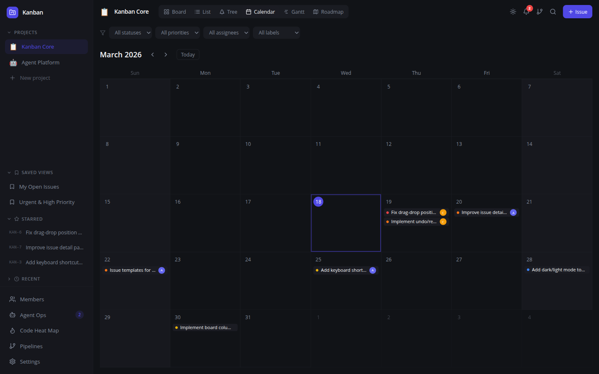
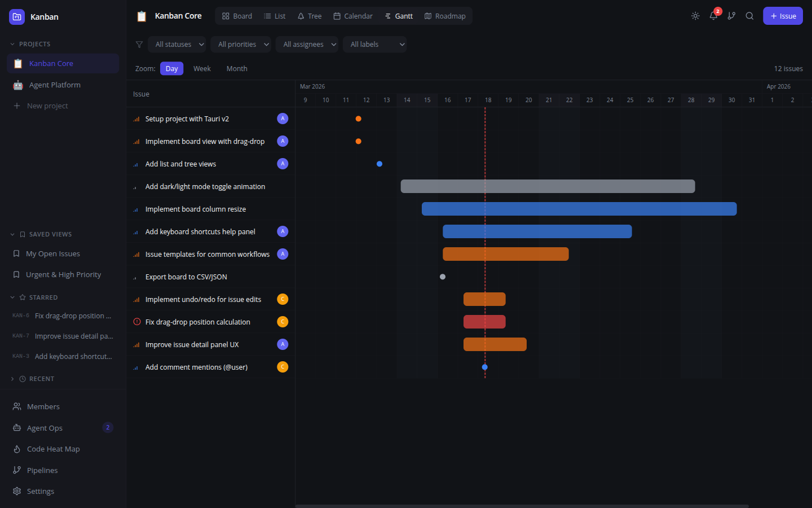
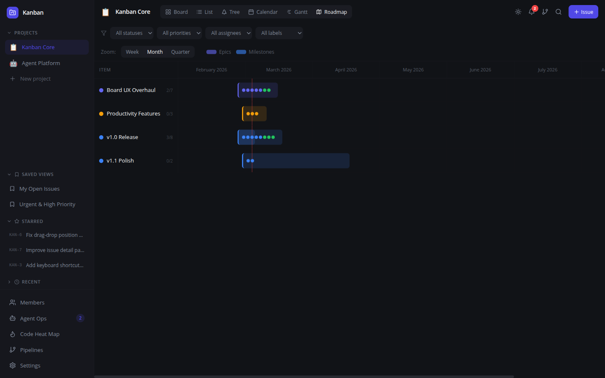
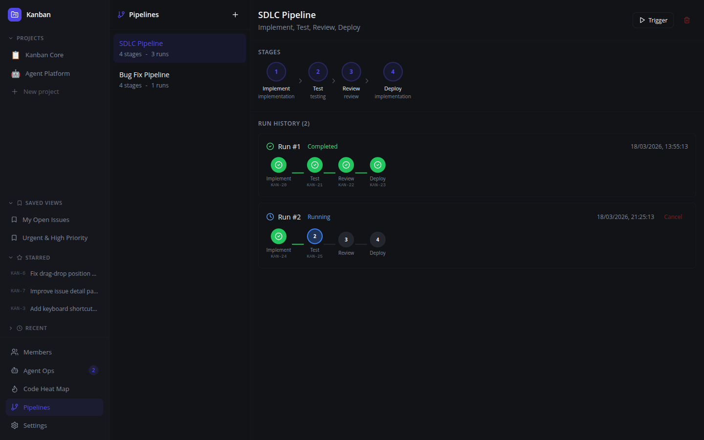
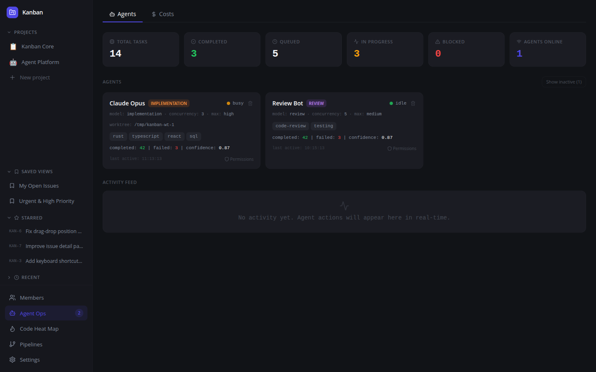
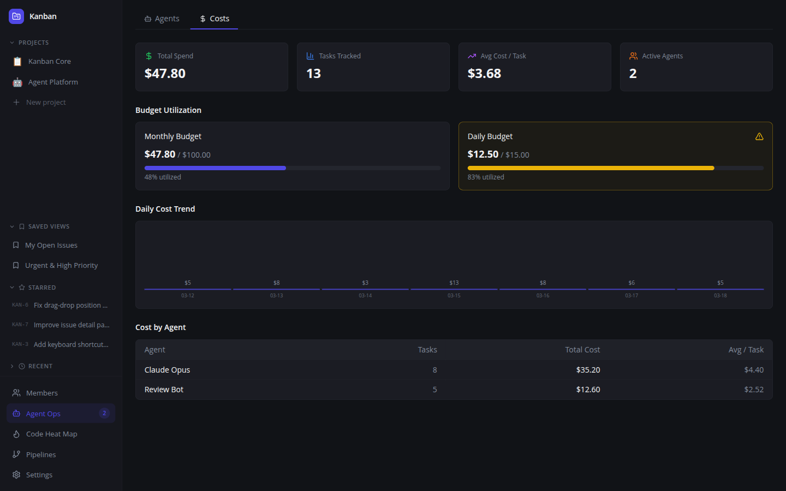
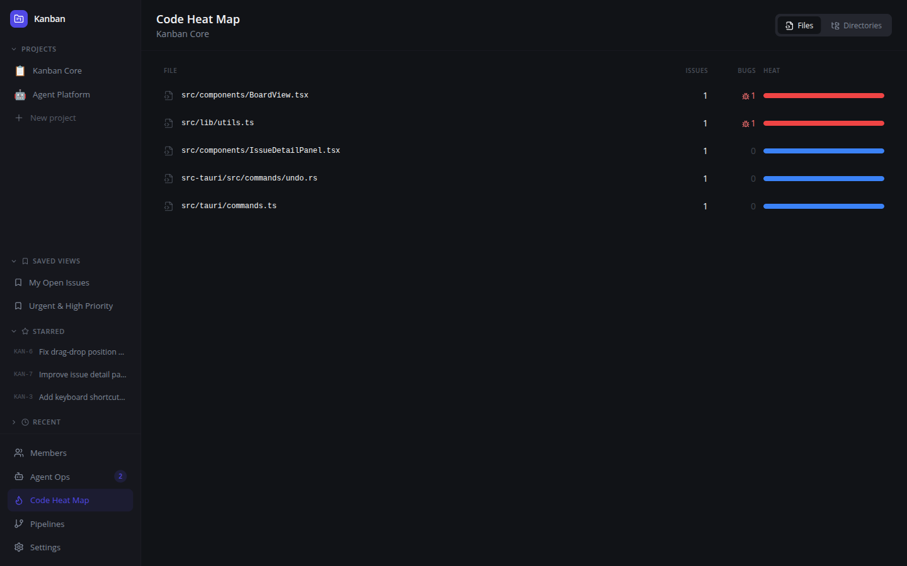
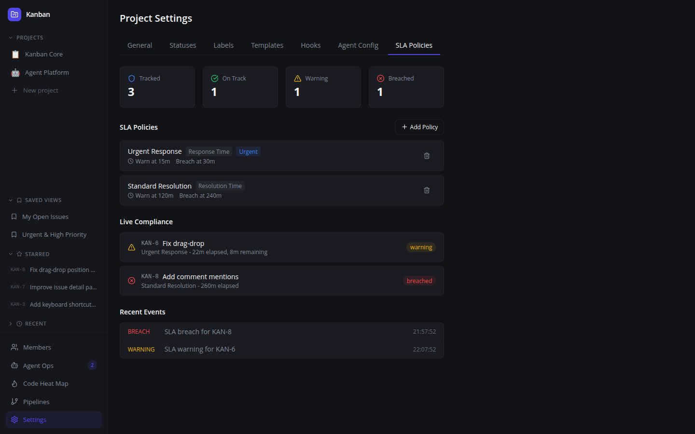

The first AI-agent-native project management platform. Multi-agent pipelines, cost tracking, SLA enforcement, and 40+ MCP tools.

Every PM tool was built for humans. Kanban was built for AI agents — with a GUI for humans to supervise.
| Feature | Kanban | Linear | Jira |
|---|---|---|---|
| Agent task contracts | Yes | No | No |
| Multi-agent pipelines | Yes | No | No |
| Agent sandboxing / ACLs | Yes | No | No |
| Cost tracking per task | Yes | No | No |
| SLA enforcement engine | Yes | No | No |
| WSJF auto-scoring | Yes | No | No |
| MCP server (JSON-RPC) | Yes | Partial | No |
| Execution replay | Yes | No | No |
| Agent marketplace | Yes | No | No |
| Local-first / offline | Yes | No | No |
| Open source | Yes | No | No |
Board, List, Tree, Calendar, Gantt, and Roadmap — all built with pure React + Tailwind, no external chart libraries.

Monthly grid with issues on due dates, today highlight

Timeline bars by priority, zoom levels, today marker

Epics + milestones with progress tracking over time

Stage chains with auto-advance and run history
Full visibility into agent performance, costs, and compliance.

Registered agents with skills, stats, and permissions

Budget gauges, daily trends, per-agent cost breakdown

Files ranked by issue count and bug density

Live compliance monitoring with auto-escalation
Tauri + React app. 6 view modes, drag-drop, keyboard shortcuts, dark theme.
kanban issue, kanban task, kanban pipeline, kanban marketplace, kanban costs, kanban sla
JSON-RPC 2.0 over stdio. Connect any AI agent via the Model Context Protocol.
Zero setup. No Docker, no Postgres. Just run the binary. Data at ~/.kanban/data.db.
kanban issue create-from-text "fix the login crash"brew tap akassharjun/kanban https://github.com/akassharjun/kanban
brew install kanban # CLI
brew install --cask kanban # Desktop appGrab the latest release from GitHub Releases. Available as .dmg (macOS), .deb (Linux), and .tar.gz binaries.
{
"mcpServers": {
"kanban": {
"command": "kanban",
"args": ["mcp"]
}
}
}